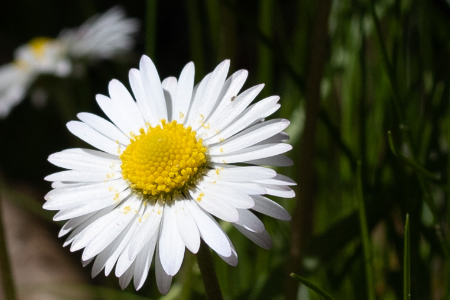

Die Familie der Korbblütler (Asteraceae)
Die Korbblütler (botanisch Asteraceae oder Compositae), auch Körbchenblütler, Korbblütengewächse, Asterngewächse oder Köpfchenblütler genannt, sind die artenreichste Familie der Bedecktsamigen Pflanzen (Magnoliopsida). Sie gehören zu deren Ordnung der Asternartigen (Asterales). Etwa 10 % der Arten der Bedecktsamer gehören zu den Asteraceae. Von der Blütenstandsform sind der deutschsprachige Trivialname Korbblütler und der botanische Name Compositae (lat. für ‚Zusammengesetzte‘) abgeleitet.
Die Familie Asteraceae enthält etwa 1600 bis 1700 Gattungen mit 24.000 bis 30.000 Arten und ist weltweit auf allen Kontinenten (außer Antarktika) in allen Klimazonen vertreten.
Das Gänseblümchen (Bellis perennis)
Das Gänseblümchen (Bellis perennis) gehört zur Pflanzenfamilie der Korbblütler (Asteraceae). Bekannt ist es auch als „Tausendschön“ und Marienblümchen. Es gedeiht anspruchslos auf Wiesen, Wegrändern und Äckern und wird zwischen drei bis 15 Zentimeter hoch. Der Blütenstängel ist leicht behaart und trägt keine Blätter.

Das Erscheinungsbild
Das Gänseblümchen ist eine ausdauernde, krautige Pflanze, die Wuchshöhen von meist 4 bis 15 (2 bis 20) Zentimetern erreicht.
Am kurzen, aufrechten Rhizom befinden sich faserige Wurzeln.
Die in einer dichten Blattrosette zusammen stehenden Laubblätter sind in Blattstiel und Blattspreite gegliedert.
Der geflügelte Blattstiel ist mindestens so lang wie die Blattspreite.
Die einfache Blattspreite besitzt nur einen Mittelnerv, ist spatelförmig bis verkehrt-eiförmig, 6 bis 40 Millimeter lang und 4 bis 20 Millimeter breit.
Vorkommen der Bellis perennis
Aus der Gattung Bellis kommt lediglich Bellis perennis außerhalb des Mittelmeerraums auch in Mittel- und Nordeuropa vor. Bellis perennis wird in Mitteleuropa als ein Archäophyt betrachtet, der durch Schaffung von weiträumigen Wiesen und Weiden in vorgeschichtlicher Zeit zu einer weiten Ausbreitung nach Norden kam. Zum so häufigen Auftreten dieser Pflanze kam es jedoch erst mit der Einführung von Rasenflächen in Gärten und Parks. Durch den Menschen wurde diese Art später auch in Nord- und Südamerika längs der pazifischen Küste, auf Madeira und Neuseeland angesiedelt. Sie ist darüber hinaus auch ein Neophyt in Sichuan, Australien, auf Hawaii und den Azoren. Häufig ist die Ausbreitung nicht gezielt erfolgt, sondern durch eine Verunreinigung von Grassamen durch die Samen des Gänseblümchens – fachsprachlich wird diese Ausbreitungsform auch als Speirochorie bezeichnet.
In den Allgäuer Alpen steigt es im Tiroler Teil auf der Wildmahdalpe bis in eine Höhenlage von 2040 Meter auf. Im Wallis steigt es am Großen St. Bernhard sogar bis zu 2451 Metern Meereshöhe auf.Das Gänseblümchen kommt mit Temperaturen bis -15° C zurecht.
Tipp
Mit Gänseblümchen kann man besonders gut einen Blumenkranz flechten. Wie das funktioniert, sehen Sie hier:
Die Chrysanthemen (Chrysanthemum)
Die Chrysanthemen (Chrysanthemum) sind ebenfalls eine Pflanzengattung in der Familie der Korbblütler (Asteraceae). Die über 40 Arten sind hauptsächlich in Ostasien verbreitet. Ihre vielen Sorten zählen zu den bedeutendsten Zierpflanzen.
Das Erscheinungsbild
Chrysanthemen-Arten sind ausdauernde, meist krautige Pflanzen, gelegentlich aber auch am Ansatz verholzende Halbsträucher. Die oberirdischen Pflanzenteile sind kahl oder behaart (Indumentum). Die wechselständig angeordneten Laubblätter sind mehr oder weniger lang gestielt oder ungestielt. Die Blattspreiten sind schwach bis stark gefiedert, handförmig, gelappt, gezähnt oder bisweilen ganzrandig. Die körbchenförmigen Blütenstände stehen oft einzeln, oder sie stehen in lockeren, zymösen oder schirmtraubigen Gesamtblütenständen zusammen. Im mehr oder weniger becher- oder selten glockenförmigen Involucrum liegen die Hüllblätter in vier oder fünf Reihen dachziegelartig übereinander. Die Hüllblätter sind breit häutig weiß, braun oder dunkelbraun gerandet oder die äußersten und mittleren sind krautig und fiederlappig bis fiederteilig. Der Korbboden ist konvex bis leicht kegelförmig. Spreublätter fehlen.
In den Blütenkörben sind Zungen- und Röhrenblüten vorhanden. Die in einer Reihe angeordneten (bei einigen Kulturformen sind es mehrere bis viele Reihen) Zungenblüten (= Strahlenblüten) sind weiblich, fruchtbar und weisen eine weiße, rosafarbene bis rote oder gelbe Zunge auf. Die vielen zwittrigen, fertilen Röhrenblüten (= Scheibenblüten) sind gelb, die röhren- bis kegelförmige Kronröhre ist fünflappig, drüsenhaarig und ungeflügelt. Die an ihrer Basis stumpfen Staubbeutel besitzen am oberen Ende lanzettlich-eiförmige oder schmal-elliptische Fortsätze. Bei den von Natur aus ungefüllten Blüten sind Nektarien vorhanden; hochgezüchtete Zierformen mit gefüllten Blüten sind für Bienen dagegen unbrauchbar, da die entsprechenden Organe in zusätzliche Blütenblätter umgebildet sind. Die fast stielrunden oder verkehrt-eiförmigen Achänen sind schwach fünf- bis achtrippig. Ein Pappus fehlt.